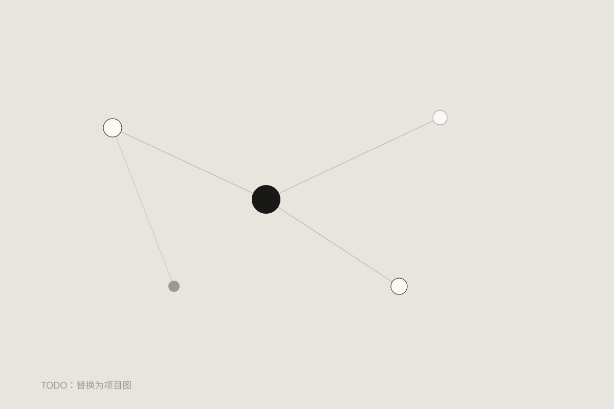

不是另一个收藏夹
第二大脑的价值，不只是存下更多东西，而是让已有的知识在写作、学习或判断中被重新使用。那篇《我读的东西一样都没记住》，写的正是收藏与使用之间的断裂。
一条最小使用路径
从一个正在回答的问题出发，找到相关笔记，核对来源，写出自己的判断，然后记录它怎样影响了一次行动。问题、材料、判断、反馈，应该能彼此连起来。
如何开始
挑出一条你确定认真读过、却很久没有用过的笔记。不要重新分类，先让它帮助你完成一段文字、解释一个问题或改进一个小决定。
开放边界
目前不提供私人知识库全文下载。未来适合开放的是目录方法、空白模板和经确认可公开的示例，而不是原始日记、工作材料或私人记录。